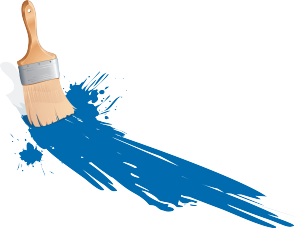
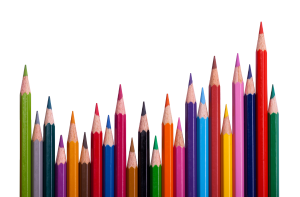

|
|
|
Je vous souhaite la bienvenue sur mon site. Ce site a pour vocation d’être un portfolio des différents projets que j’ai réalisés durant mon secondaire. La plupart ont été réalisée dans le cadre de l’un de mes cours. Ce cours étant « Art et Infographie », la majorité de mes œuvres sont des dessins ou montages réalisés avec Photoshop et Illustrator. Cependant, il y a quelques exceptions qui ont été faites autrement. Le logiciel utilisé sera toujours listé dans la description du projet, ainsi vous pourrez facilement les identifier. De plus, je présenterai brièvement les logiciels que j’ai utilisés dans ce cours. |
|  |  |
|
Tout d’abord, je me nomme Pascal Pelletier-Thériault, je suis actuellement en science naturelle au cégep de Sainte-Foy. J’ai suivi le cours de création de sites web pour essayer la programmation. J’aime bien cela et je crois que je vais étudier cela à l’université. Pour me joindre, veuillez utiliser cet email : pascal.ptheriault@gmail.com. |